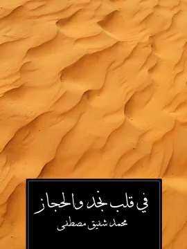

في قلب نجد والحجاز

قراءة عربية أصلية محددة النطاق في الصفحات 11 إلى 12 من ملف PDF المرتبط، وليست تلخيصا كاملا للكتاب. نناقش ما تدعمه هذه المقاطع فقط.
تمهيد في قلب نجد والحجاز
يقول الكاتب في التمهيد إن الميل دفعه لاستطلاع أحوال شبه جزيرة العرب إلى القيام برحلة طويلة شاقة، بدأها بالسفر من القاهرة إلى فلسطين، ومنها إلى نجد فالأراضي الحجازية. ويذكر أنه لم يكن له عهد بركوب متون الصحراء ولا يعرف شيئًا عن وسائل الانتقال والمعيشة فيها، فاستأجر سيارة قامت به من عمان عاصمة شرق الأردن، وقطعت في قلب الصحراء نحو أربعمائة كيلومتر في يوم كامل، دون أن يرى سوى أرض قاحلة.
زاوية وحدود القراءة
قراءة موجزة من ص ١١ إلى ص ١٢ من أصل ٦٠ صفحة، تعرض تمهيد الكتاب وبداية الرحلة إلى الجزيرة العربية، لا الكتاب كاملًا.
الطبعة والقراءة
هذه النسخة من الكتاب صادرة ومتاحة مجانًا من مؤسسة هنداوي بشكل قانوني؛ حيث إن نص الكتاب يقع في نطاق الملكية العامة تبعًا لقوانين الملكية الفكرية. وبحسب ملف الناشر، تصميم الكتاب والغلاف مرخصان برخصة المشاع الإبداعي: نسب المصنف 4.0.
تنزيل PDF المجاني ↓ القراءة والمصدر الرسمي ↗